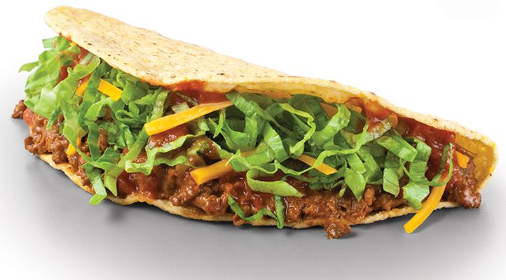
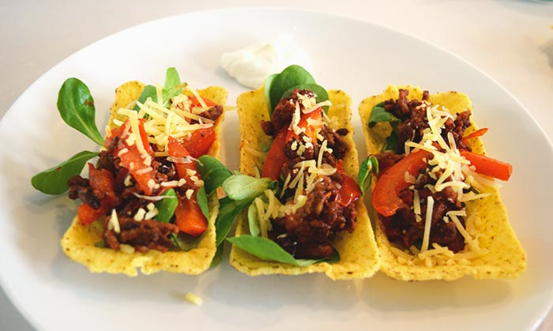
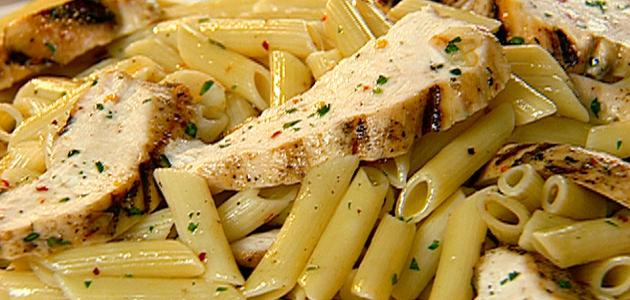
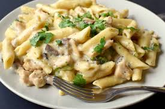

مدونة الطبخ
فكرة موقع الطبخ،
انه يتكون من جميع أكلاتي المفضله مع الوصفة وطريقة العمل👩🍳
طريقة عمل التاكو باللحم المكسيكي 🌮

المكوّنات:
- .نصف كيلوغرام من اللحم المفروم
- .بصله مقطعه الى قطع صغيره
- .نصف ملعقه كبيره من الفلفل الحار
- .ملعقتان صغيرتان من الزيت زيتون
- .نصف ملعقه كبيره من الكمون
- .نصف ملعقه كبيره من البابريكا
- .حبتان مقطعتان من البندوره
- .ثماني حبات من خبز التاكو
- .اربع اوراق من الخس
- .ربع كوب من جبن الموزريلا
سلطة التاكو🥗
المكوّنات:
- أربع قطع من خبز التاكو.
- حبتان من البندورة المقطعة.
- جزرتان مقطعتان.
- حبتان من الخس المقطع.
- كوب من الذرة المعلبة.
- كوب من البقدونس المقطع.
- ثماني ملاعق صغيرة من الكريمة الحامضة.
- ثماني ملاعق صغيرة من اللبنة.
- نصف ملعقة كبيرة من البهارات المختلفة.
- نصف ملعقة كبيرة من الكاري.
- ملعقتان صغيرتان من الزعتر المجفف.
- ربع ملعقة صغيرة من الملح.
- ربع ملعقة صغيرة من الفلفل الأسود المطحون.
- كوب من الدجاج المسلوق
اضغط على الصورة للتعرف على طريقة التحضير

طريقه عمل الباستا الايطالية بالدجاج🍝

المكوّنات:
- أربعمائة غرام من الباستا (المعكرونة المقطّعة بأشكال مخلفة).
- ثلاثة من صدور الدجاج منزوعة الجلد والعظم.
- كوب من الفطر المقطّع إلى شرائح.
- حبّة من الفلفل الأخضر الحلو مقطعة إلى مكبات صغيرة.
- حبة من الفلفل الأحمر الحلو مقطعة إلى مكبات صغيرة.
- حبتان من البصل المفروم ناعم.
- ثلاث فصوص من الثوم المهروس.
- ملعقة كبيرة من الزعتر الأخضر المفروم ناعم.
- ملعقة صغير من كل من (الملح، البهار لمشكل، والكاري) للدجاج.
- ثلاث ورقات من ورق الغار .
- ملح وفلفل أسود حسب الرغبة.
- كريمة الطبخ.
كريمة الباستا
المكوّنات:
- كوبان من الحليب السائل.
- ثلاث نقاط من عصير الليمون.
- رشة ملح.
- بيضة واحدة.
- ملعقتان كبيرتان من الزيت لنباتي.
اضغط على الصورة للتعرف على طريقة التحضير
